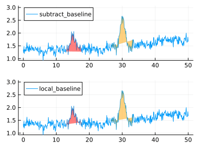

Baseline Handling
There are several ways to handle baseline correction when working with the package. The easiest method is to use the build-in local baseline correction which assumes a linear baseline between the start and end point of the integration window. It is envoked by using the keyword argument subtract_baseline (deprecated in v0.2) or local_baseline. The difference of these methods is discussed below.
Otherwise, one can subtract a baseline from the data in a preprocessing step. This can be done either before or after generating an UncertainCurve. If a baseline is subtracted from the UncertainCurve, it is possible to account for uncertainty in the baseline correction, e.g. by subtracting baselines generated using a Gaussian process.
Build-in
Local linear baseline subtraction can be achieved by passing local_baseline=true to the mc_integrate function. To visualize the integrated area, the same keyword argument can be passed to the plot() function when plotting Monte-Carlo draws.
The keyword argument subtract_baseline=true is also supported, but its use is deprecated. The difference of local_baseline and subtract_baseline can be visualized when animating draws of curves and integration bound samples (using Plots.@animate):

As the figure above shows, the baseline varies considerably more when subtract_baseline is used, compared to local_baseline. The former uses the exact start and end points of the integration window in a particular draw while the latter uses the start and end point distributions to determine a weighted average for y-values at integration bounds of a particular draw. Especially at high noise levels, rather extreme local baseline estimates can follow from using subtract_baseline and the overall uncertainty may be overestimated. It is thus recommended to use the local_baseline method.
Preprocessing
Simple baseline subtraction
The data can simply be preprocessed before a Curve object is created. For example, one can mask the signals that shall be integrated (using a filter or calls to the crop and stitch functions) and fit a polynomial or smoothing spline to be subtracted:
using Polynomials, SmoothingSplines
polyfit, splinefit = let
no_signals = stitch(crop(crv, 0, 12), crop(crv, 32, 300)) # remove signals
x = no_signals.x
y = no_signals.y
pfit = Polynomials.fit(x, y, 5)
sfit = SmoothingSplines.fit(SmoothingSpline, x, y, 2000.0)
pfit, sfit
end
crv_baseline_corrected = crv - predict(splinefit, crv.x)
plot(crv; label="data", alpha=0.3, color=:black, legend=:outertopright, size=(800, 400))
plot!(polyfit, 0, 100; label="polynomial baseline fit")
plot!(crv.x, predict(splinefit, crv.x); label="spline baseline fit")
plot!(crv_baseline_corrected; label="data - spline baseline")Uncertain baseline
It may be desirable to account for uncertainty in the subtracted baseline. One way to achieve this is to fit a Gaussian process to the dataset while excluding signals. For example, consider a dataset with a relatively broad band:
plot(crv, label=nothing)A Gaussian process can be used to approximate the baseline, while allowing for higher uncertainty in the regions where the course of the baseline is masked by signals:
using GaussianProcesses, MonteCarloMeasurements
gp = let
# cut out signals
no_signals = stitch(crop(crv, 0, 25), crop(crv, 55, 110), crop(crv, 200, 300))
# fit Gaussian process
GP(no_signals.x, no_signals.y, MeanZero(), SE(4.0, 0.1))
end
# draw random baselines ...
fs = rand(gp, crv.x, 250)
# ... and plot
plot(crv.x, fs; alpha=0.05, color=:red, dashed=:dashed, legend=nothing)
plot!(crv)
The "amplitude" of the baseline's uncertainty in the range of the signals can be tweaked by the hyperparameters of the Gaussian process, in particular the autocorrelation length scale of the covariance function (in the example SE(), the "squared exponential" function, i.e. Gaussian covariance function, with a length scale of 4.0 units).
The baseline samples can be subtracted from an UncertainCurve (here ucrv) as follows:
# make sure the number of samples matches, here 100 000 samples
ubaseline = rand(gp, crv.x, 100_000) |> transpose |> collect |> Particles
ucrv_baseline_corrected = UncertainCurve(ucrv.x, ucrv.y - ubaseline)The resulting UncertainCurve now includes not only uncertainty due to noise but also due to the baseline correction.